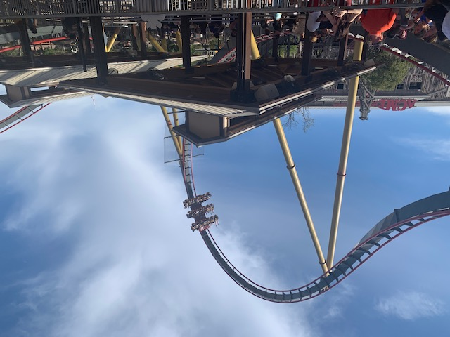
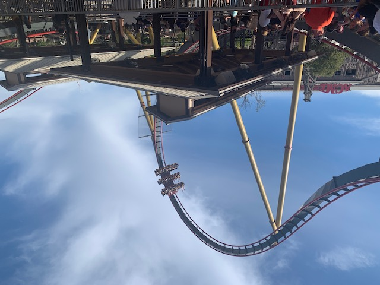

A Great Visit to Six Flags Fiesta Texas
Although this was my seventh visit to SFFT, it was my first time going solo and first time going for multiple days. I had a fantastic experience!
Recap of my Previous Visits
I've visited six times before, dating back to 2007. Check out my 2021 trip report for a summary of my prior park days at SFFT.
Overview
My time at Fiesta spanned three days: 5PM-8:30PM on Saturday, 10:30AM-8:30PM on Sunday, and 10:30AM-1:30PM on Monday. I visited over the beginning of Spring Break. Pathways were crowded, the parking lot had lots of vehicles, and food lines were long. However, ride wait times were very manageable, ranging from walk-on to 45 minutes. Monday was busiest. My disappointing 2021 visit to SFFT was redeemed by this one! The park was cleaner, friendlier, and had decent ride operations. Rides broke down more frequently than usual, but they always re-opened in 30 minutes or so. Six Flags Fiesta Texas is by far the best amusement park in the state, and has moved up a couple spots on my list of favorite parks. My coaster totals were 7 on Superman Krypton Coaster, 7 on Wonder Woman Golden Lasso Coaster, 5 on Iron Rattler, 3 on Dr. Diabolical's Cliffhanger, 2 on Batman the Ride, 2 on Poltergeist, 1 on Goliath, and 1 on Road Runner Express. I'm now up-to-date on coaster credits at SFFT.
Coasters
Superman Krypton Coaster remains my favorite ride in the park and in all of Texas. It's gotten bumpier after the MCBR, especially during the corkscrews. Kumba still gets the edge over SKC in my rankings for a better finale, but it is rougher. I rode Superman in rows 2 through 8. This ride has an amazing setting and layout that suits my preferences. It has retaken the title of my most-ridden coaster. SKC's ranking hasn't changed after this visit, but I will bump it down if it gets much rougher.
After waiting ages to ride Wonder Woman Golden Lasso Coaster twice in 2021, it was lovely to get five rides in 90 minutes this go-around on Sunday morning. However, it broke three times when I was in line. I rode in the first seat, and seats 5, 6, 7, and 8. My night ride in the back seat was pushing my intensity limit. The curved airtime hill bothered me on my rides this time. It gave me temporary shoulder pain by thrusting me into the OTSR. Wonder Woman is still my second-favorite coaster at the park by a big margin. I loved the drop, pacing, and all inversions. It ran very smooth. I've raised it a couple spots in my rankings.
I got one ride on Iron Rattler in the middle of the train and day that had just the right kind of airtime. My other rides provided the usual experience: ejector airtime that harshly pushed me into the lap bar many times. I have come to loathe the part on the quarry wall and the final hill/turn into the brake run. It's a shame that the airtime on Iron Rattler isn't consistently a smidge tamer. On this visit, I felt like I was having to tolerate about half of the ride's elements instead of looking forward to them. As such, I've dropped Iron Rattler down six spots. It's my second-lowest RMC, only beating out Twisted Cyclone.
I was eager to try Dr. Diabolical's Cliffhanger, and was surprised that I liked my ride in the front row better than the two times I rode in the back. It was smoother and had a more exciting drop. I didn't notice a difference in terms of airtime. This coaster was a great addition to SFFT's lineup, and its highlight is obviously the drop. I just wish this ride had more elements, or more substantial ones. The first half was awesome, but the second half felt forgettable. I appreciated the theming and air-conditioned pre-show. This ride's loose article policy/locker system is perfect. The onboard audio was annoying to hear when not on the ride. I rank Cliffhanger between Valravn and SheiKra. It barely misses my top 50 coasters list. Texas needed a dive coaster, and Cliffhanger fit nicely on its plot of land. I just wish it had better elements after the MCBR. It was surprisingly jittery too in the back edge seats.
Poltergeist was a coaster I'd previously only ridden once with my dad in 2007. We both thought it was rough and claustrophobic. After this somewhat traumatizing experience, Poltergeist was either skipped or closed on all other past visits. This time, I liked it a lot. The restraint didn't squish my feet like Flight of Fear did. Poltergeist is so intense from its launch to brake run. It still suffers from bad reliability, but I liked the theme and new paint job. This coaster has catapulted in my rankings from bad to pretty good. I prefer it slightly to Flight of Fear.
S&S 4D Freespin credits have been elusive for me, so I was happy to ride Batman the Ride twice. It was a bit more enjoyable than what I remember about The Joker at SFGAM. The ride experience feels more like a carnival ride than a roller coaster in some ways, since riders cannot predict the spinning. I got 2-3 flips and 2-3 stalls on both rides. I wish Batman's queue had more shade. Of course, better capacity and reliability would be wonderful too.
I made sure to ride Road Runner Express since I didn't get the chance in 2021. This coaster was not quite as good as I recalled. It has some forces and interacts nicely with Iron Rattler and the train. However, it is short and lacks big drops, speed, and thrills. Road Runner Express is a much-needed family ride at SFFT though, and it is one of the better mine trains.
Other Rides
I rode the Fiesta Texas Railroad as a break from coasters. It provided nice views of Iron Rattler, Cliffhanger, Superman, and Road Runner. The train took awhile to load/unload. I also rode Joker Carnival of Chaos on Monday morning before the big coasters opened for the day. I liked Joker's "funhouse gone wrong" theming in the queue, but didn't like being so close to strangers. This is the largest and fastest pendulum ride I've been on, and it was fun! There was a lot of wind, and it felt like the ride was suspended in the air for a good amount of time on each swing. I got stuck on Joker after the ride cycle finished, but it was fixed in under 10 minutes. I wouldn't want to wait for Joker in the future, but I enjoyed it.
Food & Merchandise
On Saturday, I ate dinner at Primo's Pizzeria. I appreciated the facelift that Primo's has gotten since my last visit. The new tables and chairs make it feel more upscale. My pepperoni pizza slice was average. On Sunday, I opted for orange chicken and noodles from Chop Six. The noodles were cold, but everything tasted OK. My favorite meal was lunch at Old Blue's Barbeque on Monday. My pulled pork sandwich was tasty and not too fatty. The potato salad tasted typical, like one would find at a grocery store or chain barbecue joint. This restaurant wasn't very crowded at peak lunch time either. I didn't buy any merchandise on this trip.
Cost
Since I visited SFFT over multiple days and will go to at least one other Six Flags property later this year, I bought a season pass. SFFT ran a promotion in February, and I paid $109 total for a diamond season pass. The price is typically closer to $175 per person. My pass includes admission and parking at all locations, a season drink bottle, food and merch discounts, and skip-the-line passes, plus other perks. This pass was an AMAZING value! My meals cost $10, $15, and $15 respectively. All meal costs did not include a drink and were discounted 20%, so I imagine the full price with a drink would've been $20-$25 each. The entire trip (2 nights at a hotel, gas, food, Six Flags pass, and Cliff Carver ride) cost $467.
Photos
These photos were taken by me. Please credit this website if used. Check out the bottom of my photos page for pictures of SFFT from 2014.
 
